Petite présentation de mon livre et de ses thématiques : un nouveau réseau social permettant de partager ses émotions, et indirectement un contrôle de l’information, puisque le réseau offre des informations uniquement en accord avec les émotions de la personne qui les reçoit.
Est-ce que ça, c’est une Fake News ?
Est-ce que ça, c’est une Fake News ?
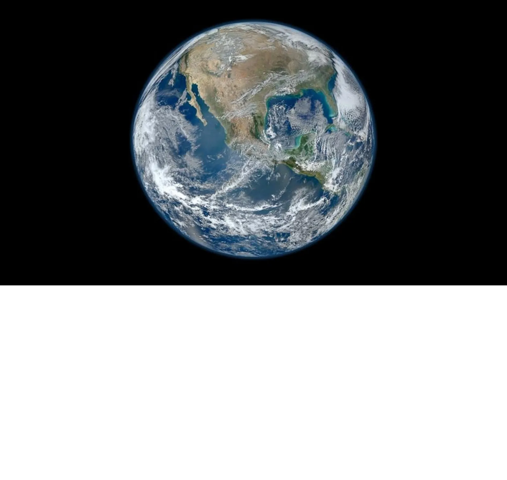
C’est quoi, une Fake News ?
Une information qui est fausse !
Comment on sait ce qui est vrai ou faux ?
Selon vous ?
Est-ce qu’on peut se baser uniquement sur ce qu’on connaît NOUS ?
Est-ce que c’est une Fake News ? (1/12)
Votez à main levée, puis découvrez la réponse.
Emmanuel Macron est président de la République.
Vrai
Faux
Vrai. Facile à vérifier : c’est une information officielle.
Est-ce que c’est une Fake News ? (2/12)
Le plateau de Gizeh se trouve en Égypte.
Vrai
Faux
Vrai. On peut le vérifier sur une carte.
Est-ce que c’est une Fake News ? (3/12)
Emmanuel Macron a rencontré un alien.
Vrai
Faux
Faux. Cette image a été fabriquée par une intelligence artificielle.
Est-ce que c’est une Fake News ? (4/12)
Le soleil est une étoile.
Vrai
Faux
Vrai. C’est l’étoile la plus proche de nous.
Est-ce que c’est une Fake News ? (5/12)
L’étoile du berger est une étoile.
Vrai
Faux
Faux. C’est la planète Vénus, malgré son nom !
Est-ce que c’est une Fake News ? (6/12)
Les éléphants sont les seuls animaux qui ne peuvent pas sauter.
Vrai
Faux
Faux. Les éléphants ne sautent pas, mais ils ne sont pas les seuls : le paresseux non plus.
Est-ce que c’est une Fake News ? (7/12)
Les chats voient en noir et blanc.
Vrai
Faux
Faux. Les chats voient des couleurs, mais moins bien que nous.
Est-ce que c’est une Fake News ? (8/12)
Une vache peut monter des escaliers mais pas en descendre.
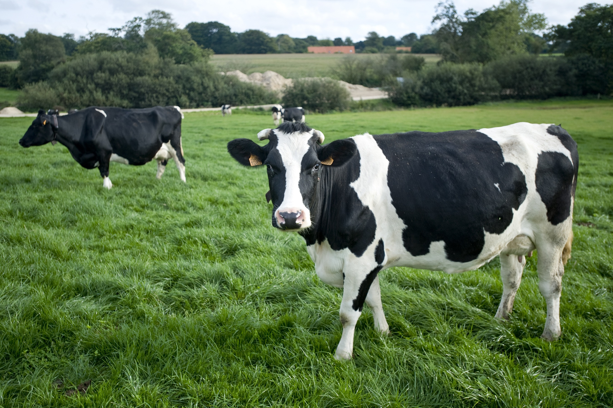
Vrai
Faux
Faux. Elle a du mal à les descendre et n’aime pas ça, mais elle en est capable.
Est-ce que c’est une Fake News ? (9/12)
Les pieuvres ont trois cœurs.
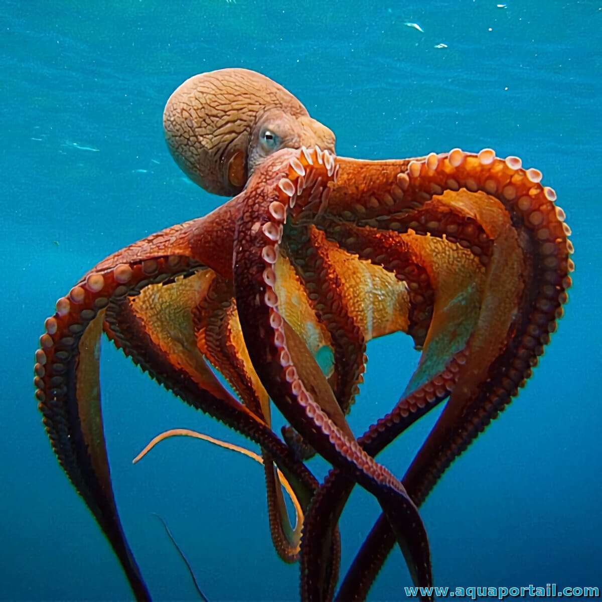
Vrai
Faux
Vrai. Un cœur principal, et un pour chacune de leurs deux branchies.
Est-ce que c’est une Fake News ? (10/12)
Les requins sont les seuls poissons à avoir des paupières.
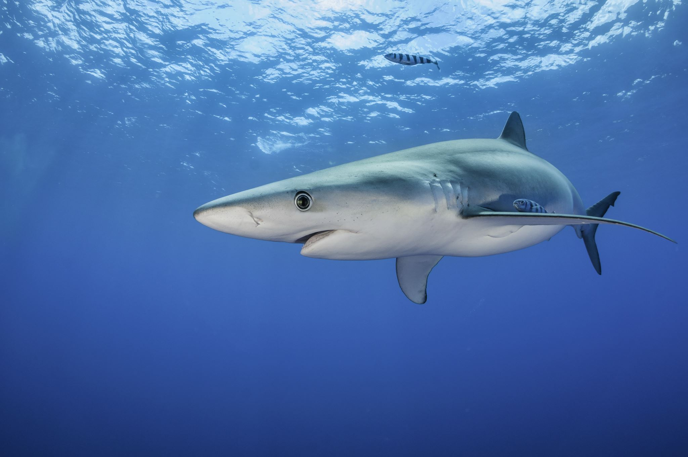
Vrai
Faux
Faux. La plupart des requins n’ont pas de vraies paupières ; certains ont une membrane qui protège l’œil.
Est-ce que c’est une Fake News ? (11/12)
On avale en moyenne 8 araignées par an en dormant.
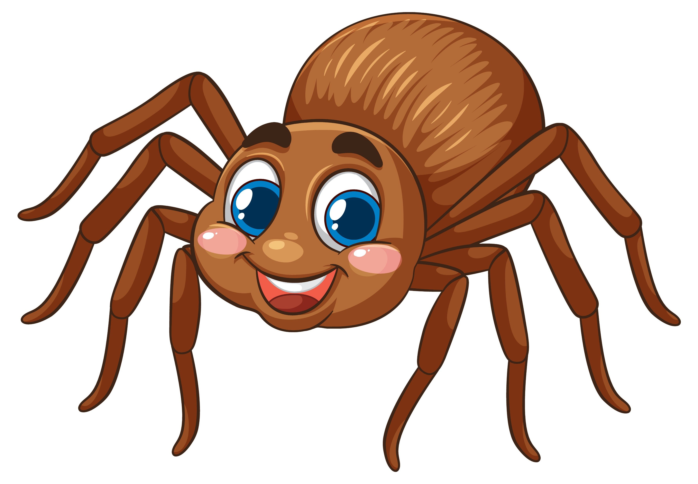
Vrai
Faux
Faux. C’est une rumeur inventée : aucune étude ne l’a jamais montré.
Est-ce que c’est une Fake News ? (12/12)
Le miel ne périme jamais.
Vrai
Faux
Vrai. Bien fermé, le miel se conserve des milliers d’années.
Quels sont les critères pour valider l'information ?What criteria help us validate information?
11
Fiabilité de la sourceReliability of the source
22
Fiabilité de l'interlocuteurReliability of the speaker
33
Niveau de preuvesLevel of evidence
44
Plusieurs sources fiables en parlentSeveral reliable sources report it
55
Crédibilité de l'informationCredibility of the information
66
Commentaires et critiques de l'informationComments and criticism of the information
Mais attention…But be careful…
La glace au chocolat est la meilleure des glaces
FaitsFacts
OpinionsOpinions
Quelle est la différence entre un fait et une opinion ?
Un fait est une information prouvée : c’est le même pour tout le monde !
Une opinion est un avis personnel : chacun peut en avoir un différent !
Jeu ! Qu’est-ce qui est un fait, qu’est-ce qui est une opinion ?
Les pommes sont des fruits
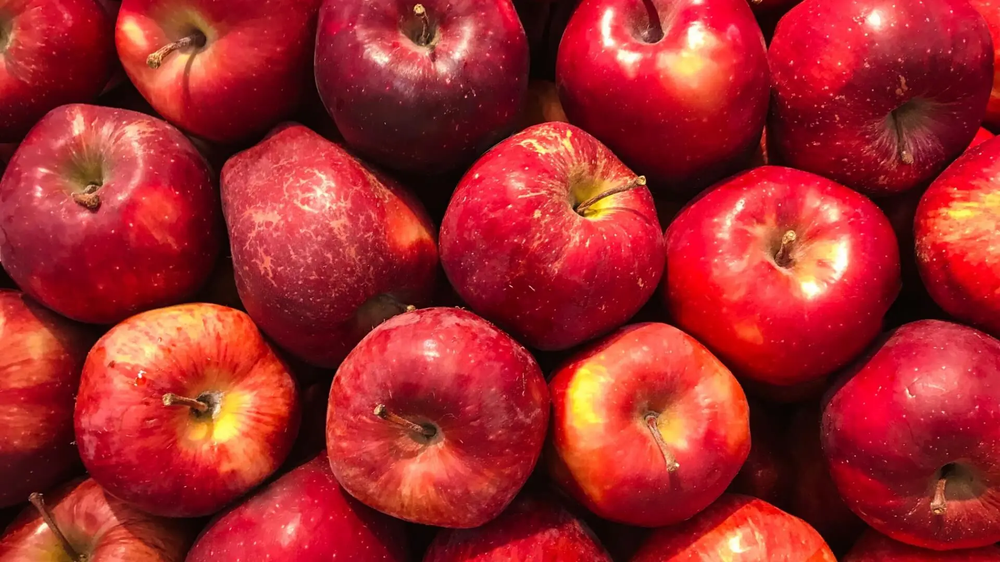
Les gâteaux au chocolat sont meilleurs que les glaces.
Les gâteaux au chocolat sont une pâtisserie.
Séance 2
L’effet de cadrage
Regardez bienWatch closely
« Monsieur, c'est mal cadré ! » ."Sir, that's badly framed!" A simple crop is enough to completely change what we think we're seeing.
DéfinitionDefinition
Biais de cadrageFraming bias
La manière dont une information est présentée, son « cadre », influence notre jugement, indépendamment du contenu réel de l'information.The way information is presented, its "frame", shapes our judgement, regardless of the actual content.
Test
On va voir si vous pouvez repérer l’effet de cadrage.
Notre cerveau voit des choses qui ne sont pas vraies !
On peut s’en servir pour nous piéger sur Internet.
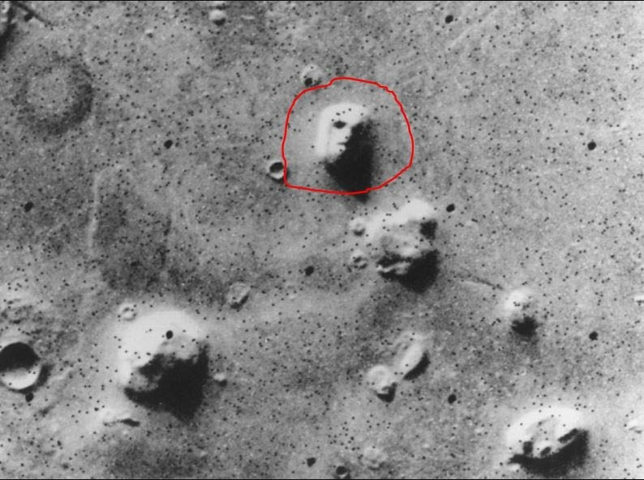
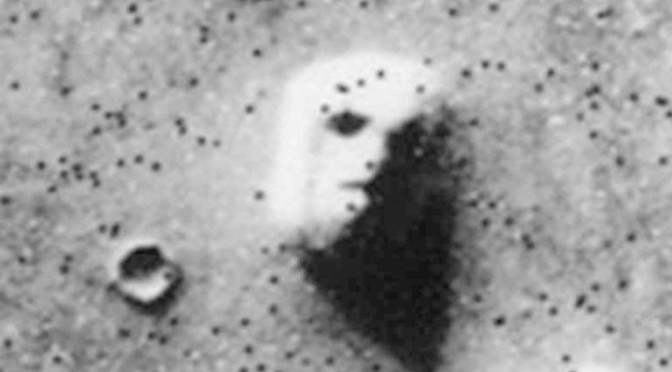
Conclusion
Nos sens n’ont pas toujours raison.
Ce n’est pas grave !
Si on en a conscience, ça nous permet d’être plus vigilants et de rechercher ce qu’il se passe vraiment.
Séance 4
Comment vérifier une image ?
Pensez-vous être plus fort que l’IA ? (1/24)
Vrai : c’est une vraie photo. Faux : elle est générée par IA.
Photo 1 : vraie photo, ou générée par IA ?
Vrai
Faux
Image générée par intelligence artificielle.
Pensez-vous être plus fort que l’IA ? (2/24)
Photo 2 : vraie photo, ou générée par IA ?
Vrai
Faux
Vraie photo.
Pensez-vous être plus fort que l’IA ? (3/24)
Photo 3 : vraie photo, ou générée par IA ?
Vrai
Faux
Image générée par intelligence artificielle.
Pensez-vous être plus fort que l’IA ? (4/24)
Photo 4 : vraie photo, ou générée par IA ?
Vrai
Faux
Image générée par intelligence artificielle.
Pensez-vous être plus fort que l’IA ? (5/24)
Photo 5 : vraie photo, ou générée par IA ?
Vrai
Faux
Image générée par intelligence artificielle.
Pensez-vous être plus fort que l’IA ? (6/24)
Photo 6 : vraie photo, ou générée par IA ?
Vrai
Faux
Image générée par intelligence artificielle.
Pensez-vous être plus fort que l’IA ? (7/24)
Photo 7 : vraie photo, ou générée par IA ?
Vrai
Faux
Image générée par intelligence artificielle.
Pensez-vous être plus fort que l’IA ? (8/24)
Photo 8 : vraie photo, ou générée par IA ?
Vrai
Faux
Image générée par intelligence artificielle.
Pensez-vous être plus fort que l’IA ? (9/24)
Photo 9 : vraie photo, ou générée par IA ?
Vrai
Faux
Image générée par intelligence artificielle.
Pensez-vous être plus fort que l’IA ? (10/24)
Photo 10 : vraie photo, ou générée par IA ?
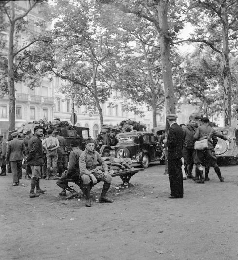
Vrai
Faux
Image générée par intelligence artificielle.
Pensez-vous être plus fort que l’IA ? (11/24)
Photo 11 : vraie photo, ou générée par IA ?
Vrai
Faux
Image générée par intelligence artificielle.
Pensez-vous être plus fort que l’IA ? (12/24)
Photo 12 : vraie photo, ou générée par IA ?
Vrai
Faux
Image générée par intelligence artificielle.
Pensez-vous être plus fort que l’IA ? (13/24)
Photo 13 : vraie photo, ou générée par IA ?
Vrai
Faux
Image générée par intelligence artificielle.
Pensez-vous être plus fort que l’IA ? (14/24)
Photo 14 : vraie photo, ou générée par IA ?
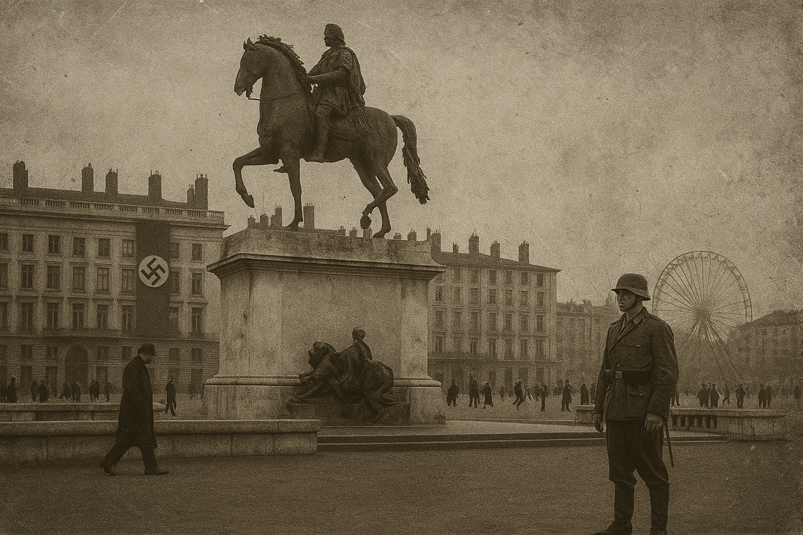
Vrai
Faux
Image générée par intelligence artificielle.
Pensez-vous être plus fort que l’IA ? (15/24)
Photo 15 : vraie photo, ou générée par IA ?
Vrai
Faux
Image générée par intelligence artificielle.
Pensez-vous être plus fort que l’IA ? (16/24)
Photo 16 : vraie photo, ou générée par IA ?
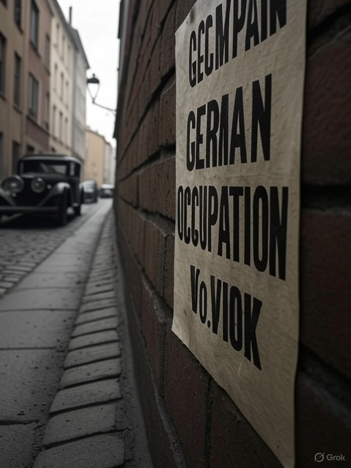
Vrai
Faux
Image générée par intelligence artificielle.
Pensez-vous être plus fort que l’IA ? (17/24)
Photo 17 : vraie photo, ou générée par IA ?
Vrai
Faux
Image générée par intelligence artificielle.
Pensez-vous être plus fort que l’IA ? (18/24)
Photo 18 : vraie photo, ou générée par IA ?
Vrai
Faux
Image générée par intelligence artificielle.
Pensez-vous être plus fort que l’IA ? (19/24)
Photo 19 : vraie photo, ou générée par IA ?
Vrai
Faux
Image générée par intelligence artificielle.
Pensez-vous être plus fort que l’IA ? (20/24)
Photo 20 : vraie photo, ou générée par IA ?
Vrai
Faux
Image générée par intelligence artificielle.
Pensez-vous être plus fort que l’IA ? (21/24)
Photo 21 : vraie photo, ou générée par IA ?
Vrai
Faux
Image générée par intelligence artificielle.
Pensez-vous être plus fort que l’IA ? (22/24)
Photo 22 : vraie photo, ou générée par IA ?
Vrai
Faux
Image générée par intelligence artificielle.
Pensez-vous être plus fort que l’IA ? (23/24)
Photo 23 : vraie photo, ou générée par IA ?
Vrai
Faux
Image générée par intelligence artificielle.
Pensez-vous être plus fort que l’IA ? (24/24)
Photo 24 : vraie photo, ou générée par IA ?
Vrai
Faux
Image générée par intelligence artificielle.
Vérifier le contexte.
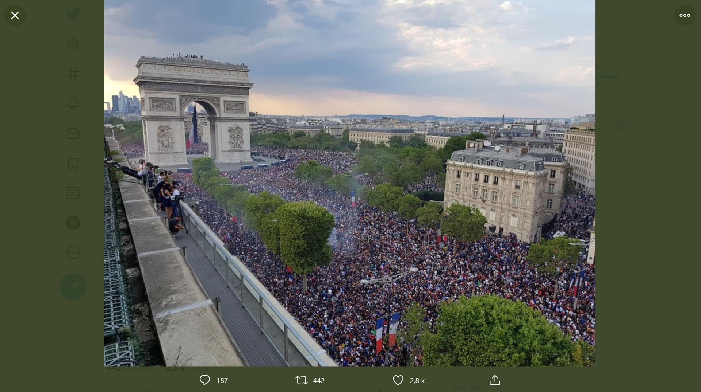
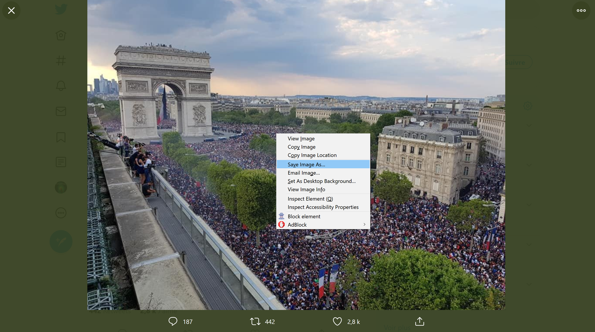
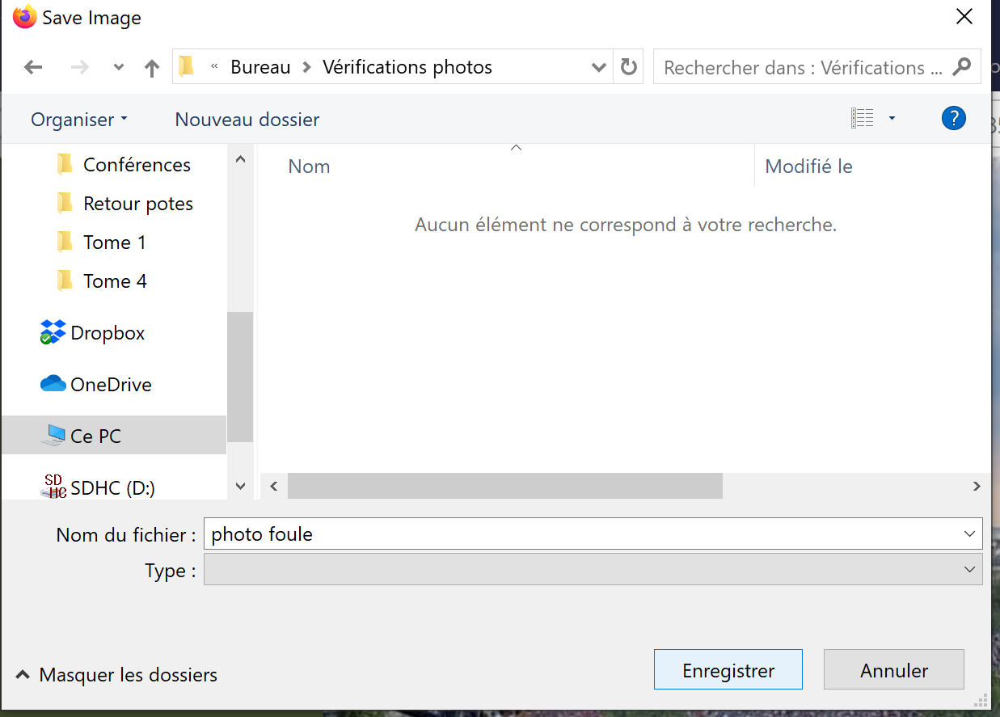
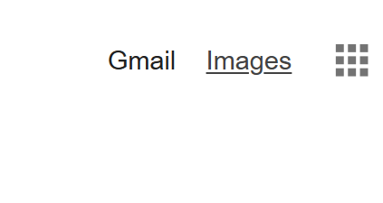
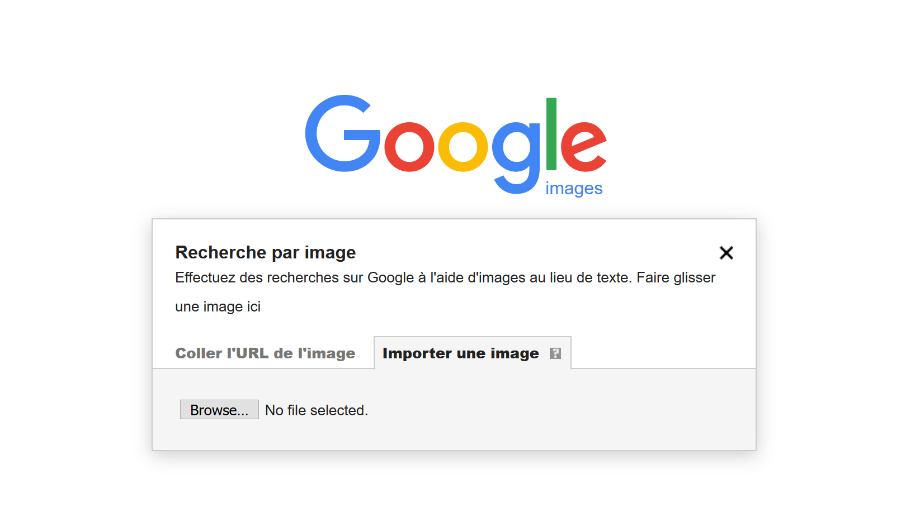
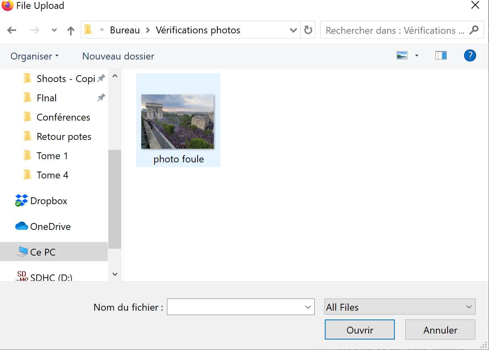
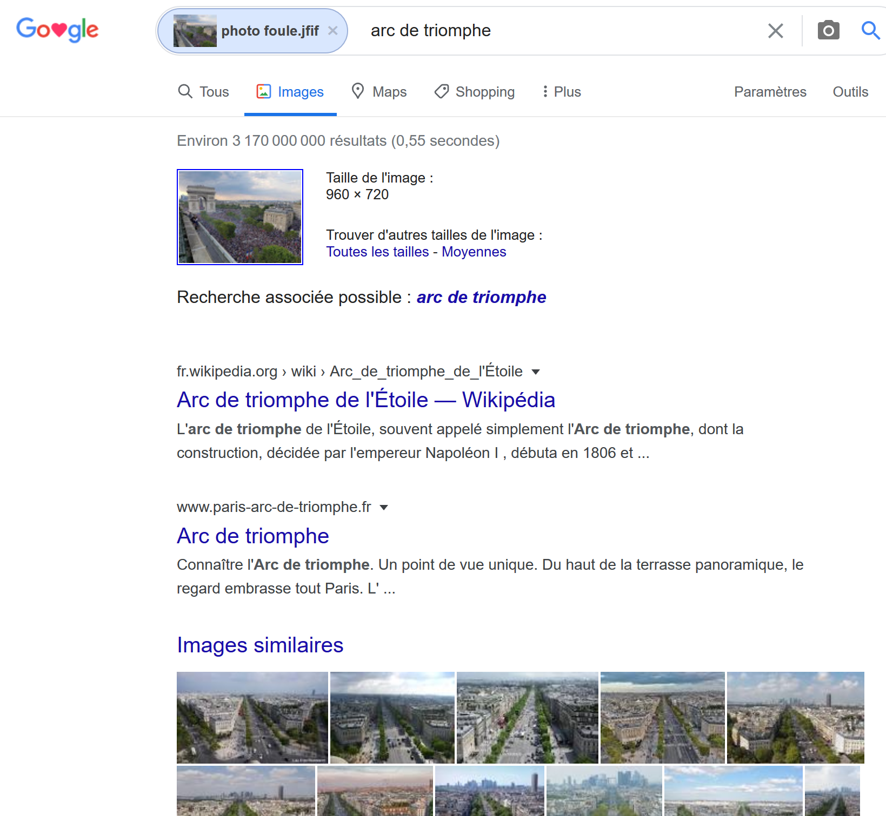
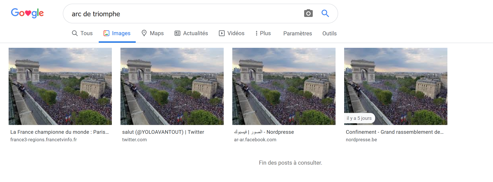
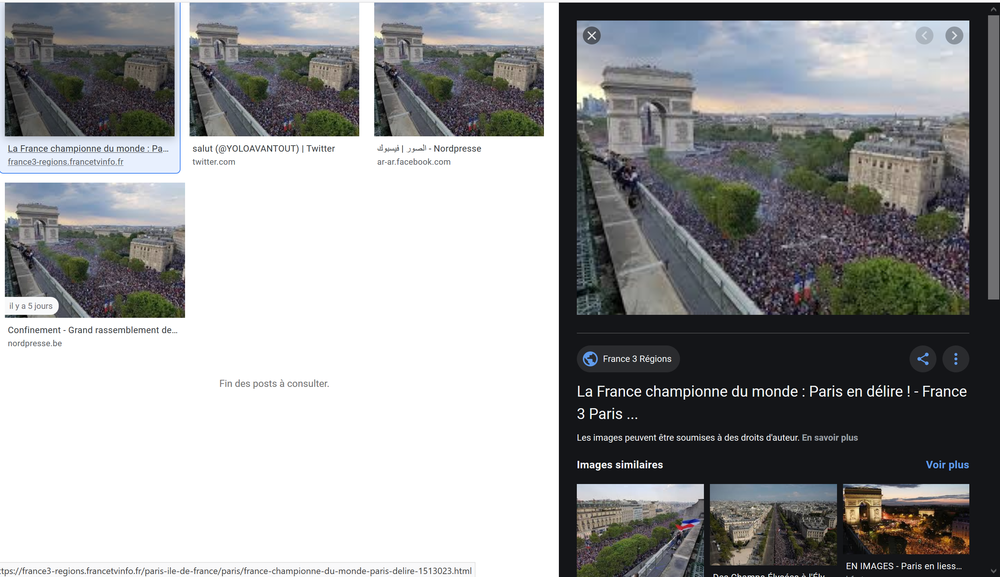
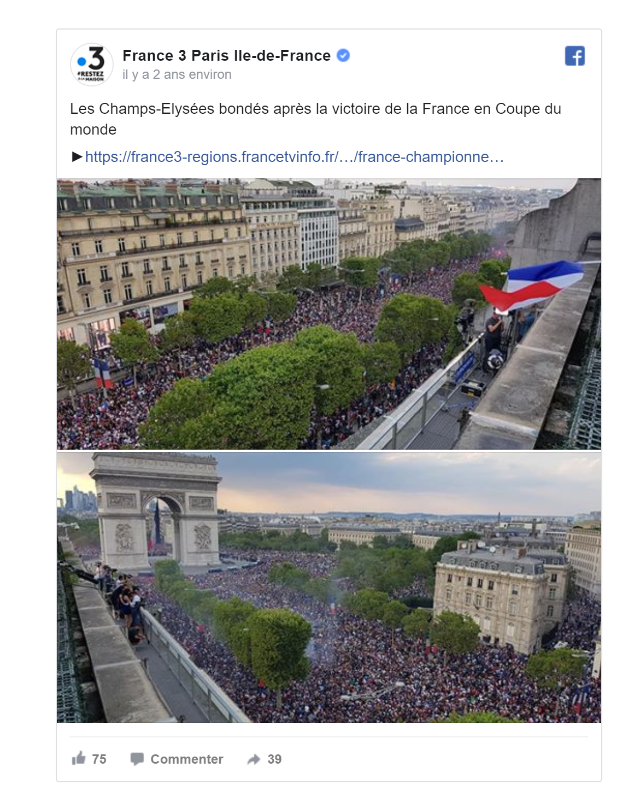
De quelles couleurs sont ces drapeaux ?What colours are these flags?
Drapeau françaisFrench flag
Drapeau russeRussian flag
Séance 5
Les biais cognitifs
Objectifs de la séance
Les biais cognitifs
Objectif : identifier les biais cognitifs principaux et leur impact sur notre perception de l’information.
Notions : biais de confirmation, de popularité, appel à l’émotion.
Outils : énigmes, jeux de rôle, vidéos d’influenceur à décrypter.
Message clé : ce qui nous plaît, la popularité, les émotions ≠ vérité.
Question…
Blanc blanc blanc blanc blanc blanc blanc
Que boit la vache ?
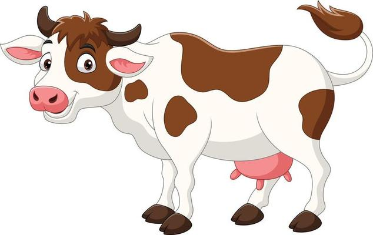
Deux façons de penserTwo ways of thinking
Le système intuitifThe intuitive system
Fonctionne vite ! Consomme peu d'énergie. Peut faire des erreurs.Works fast! Uses little energy. Can make mistakes.
Le système analytiqueThe analytical system
Fonctionne lentement. Consomme beaucoup d'énergie. Est plus rationnel, plus analytique.Works slowly. Uses a lot of energy. Is more rational, more analytical.
À votre avis, sur les réseaux…
This audio illusion relies on French words and may not work the same way in English.
Les biais cognitifs !Cognitive biases!
Une distorsion dans le traitement « cognitif » d'une information.A distortion in how our brain "cognitively" processes information.
Il est tard, vous êtes chez vous, et vous allez sur les réseaux sociaux pour vous détendre…It's late, you're at home, and you open social media to unwind…
Deux publications s'affichent. Sur laquelle cliquez-vous ?Two posts show up. Which one do you click?
Le biais émotionnelEmotional bias
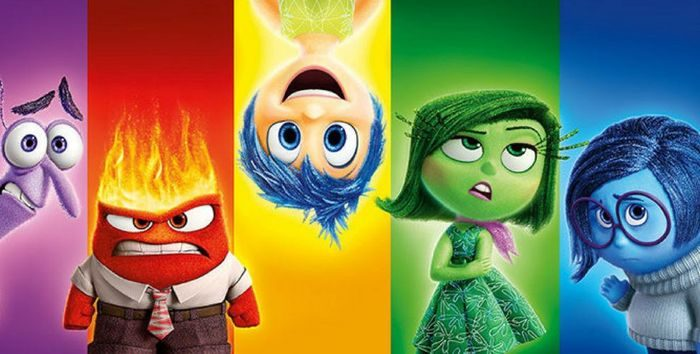
Une information qui déclenche une émotion forte capte davantage notre attention et notre mémoire, indépendamment de sa véracité.Information that triggers a strong emotion grabs more of our attention and memory, regardless of whether it's true.
Le biais de confirmation !Confirmation bias!
La tendance à privilégier les informations qui confirment ce qu'on pense déjà, et à ignorer ou rejeter celles qui le contredisent.The tendency to favour information that confirms what we already believe, and to ignore or reject anything that contradicts it.
Le piège n'est pas forcément de se faire avoir par une Fake News, mais de considérer comme Fake News une information vraie qui ne nous plaît pas.The trap isn't necessarily falling for fake news: it's dismissing true information we dislike as fake news.
Je sais maintenant distinguer une preuve d’une intuition, repérer les biais, vérifier une image et un fait.
Merci !
Annexe
Présentation du parcours aux écoles
Présentation du projet
Parcours pédagogique structuré sur 6 séances d’une demi-heure.
Objectif : développer l’esprit critique face à l’information en ligne.
Public : élèves de CM1 et CM2.
Format : distanciel (Microsoft Teams).
Séance 1 : C’est quoi une information ? C’est quoi une Fake News ?
Objectif : comprendre ce qu’est une fake news.
Notions : fake news, faits / opinions / biais de cadrage.
Outils : jeu de questions-réponses sur des images pour distinguer le vrai du faux, le fait de l’opinion, et montrer l’importance de la manière de présenter une information.
Message clé : distinguer le vrai du faux est essentiel !
Séance 2 : Peut-on faire confiance à notre cerveau ?
Objectif : comprendre les limites de notre perception.
Message clé : nos sens peuvent nous tromper, mais ce n’est pas grave ! En prendre conscience permet d’être plus vigilant.
Séance 3 : Les biais cognitifs
Objectif : identifier les biais cognitifs principaux et leur impact sur notre perception de l’information.
Notions : biais de confirmation, de popularité, appel à l’émotion.
Outils : énigmes, jeux de rôle, vidéos d’influenceur à décrypter.
Message clé : ce qui nous plaît, la popularité, les émotions ≠ vérité.
Séance 4 : Vérifier une information
Objectif : apprendre à vérifier une information.
Notions : source, preuves, crédibilité de l’information.
Outils : photos et vidéos en IA (Seconde Guerre mondiale), enquête sur l’auteur (moi), recherche inversée d’images.
Message clé : prendre le temps de vérifier la solidité d’une information avant de la croire.
Séance 5 : Limiter l’influence des influenceurs
Objectif : comprendre les mécanismes d’influence.
Notions : influenceurs, émotions, popularité.
Outils : énigmes, vidéos d’influenceurs.
Message clé : quelqu’un de convaincant n’a pas toujours raison.
Séance 6 : Cas pratiques
Objectif : consolider les acquis avec des énigmes en direct.
Notions : toutes les notions précédentes.
Outils : jeux de rôles, énigmes, illusions d’optique.
Message clé : pratiquer, pratiquer pour renforcer nos connaissances !
Conditions de mise en œuvre
Intervenant extérieur.
En distanciel (connexion internet nécessaire).
Participation via discussion, main levée et votes.
Aucune prise de parole obligatoire.
Après la séanceAfter the session
Le bilan, les jeux, et votre retourSummary, games, and your feedback
Scannez ce QR code : vous pourrez donner votre retour, revoir le bilan de la formation ou rejouer aux jeux.Scan this QR code: you can leave your feedback, review the session summary, or play the games again.


![QR code vers la page antoninatger.github.io/interventions/retours]() antoninatger.github.io/interventions/retours →antoninatger.github.io/interventions/retours →
antoninatger.github.io/interventions/retours →antoninatger.github.io/interventions/retours →